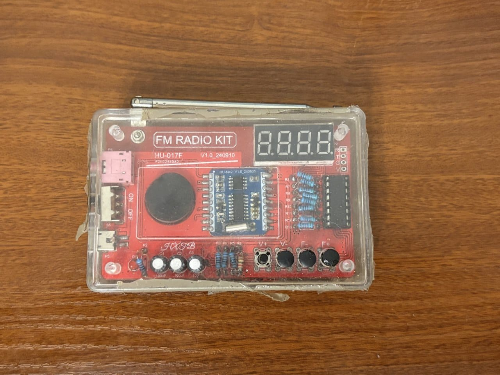
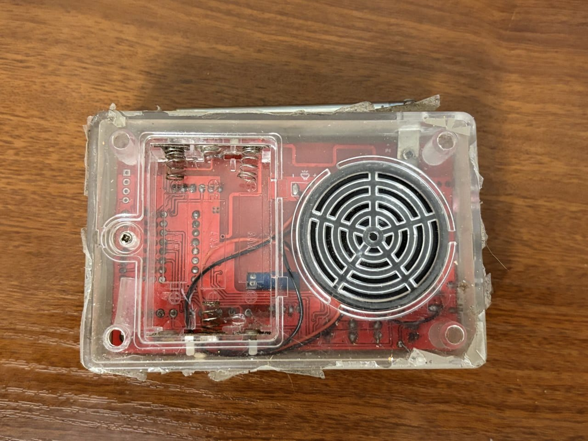

✓ Плюсы
- Все перечисленные функции работают.
- Можно слушать через проводные наушники.
- Поддерживает питание от батареек и внешнего источника.
Рабочее FM-радио с экраном частоты, наушниками и двумя способами питания.


Это старый самостоятельно собранный радиоприёмник в прозрачном корпусе. Часть компонентов из него выпаивалась и затем устанавливалась обратно. Сейчас устройство работает.
FM-радиоприёмник
Работает
2025
Проводные наушники
Батарейки или внешний источник
Показывает частоту